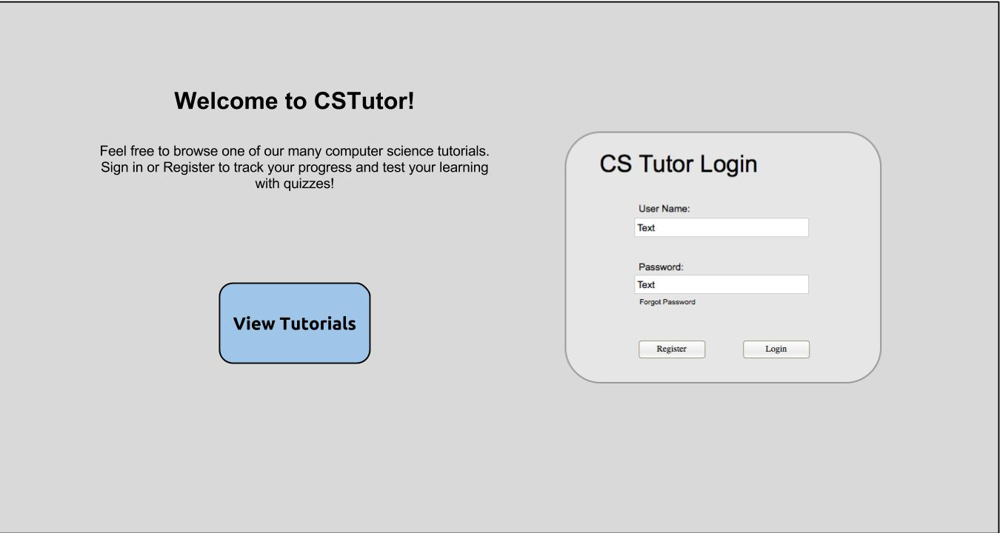
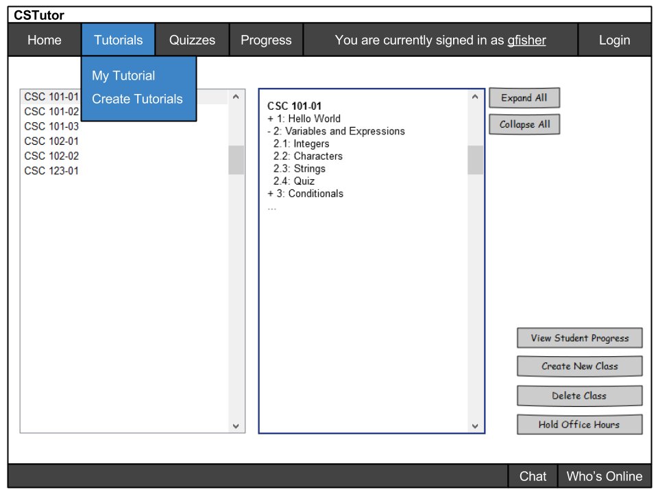
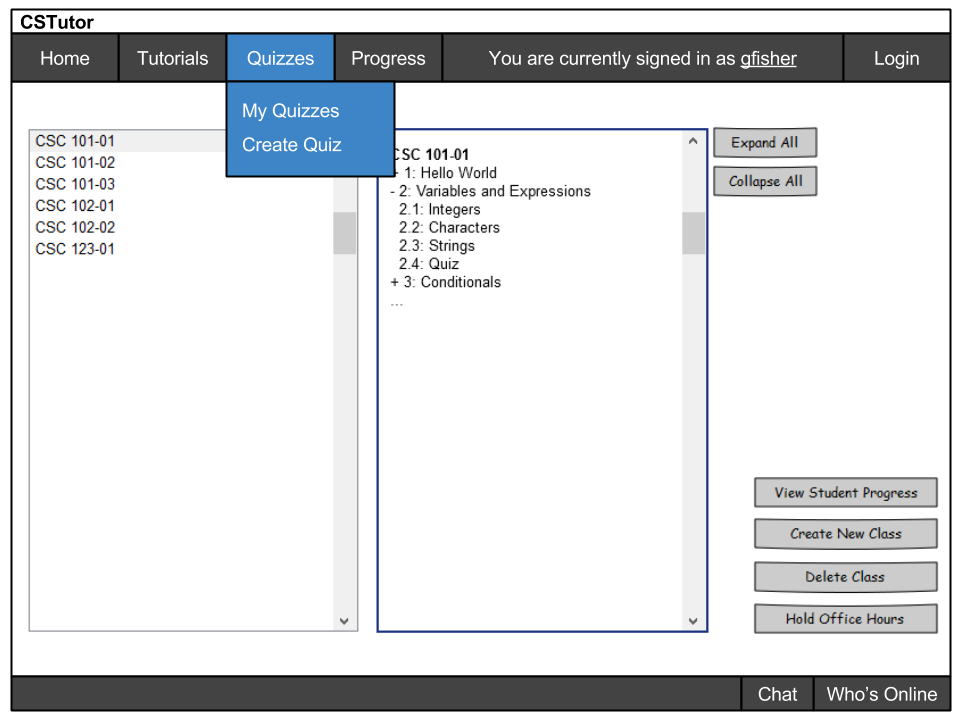

The intial screen users will be directed to upon opening CSTutor is shown as the following.

The user will be greated with a very generic welcome screen. On the right side of the screen, we will give our users a the option of signing in or registering for our service. If the user wishes to remain a guest, they will have access to one of the many tutorial services that we offer. Upon clicking "View Tutorials" or "Login" (providing you have the correct credentials) it will take you to the main tutorial navigation page. After a professor logs in they will be sent to this screen.
The Home, Progress, and Login are just buttons that will be clicked. The Tutorials, Quizzes, and Chat will have dual functionality, they can be just clicked which would take the user to a landing page for each of those, or if they are hovered over a dropdown will appear
When an instructor clicks on Home it will take them to the High Level Manager. If Progress is clicked it will take the instructor to the progress page.
If a user is not logged in then Login will appear in the menu and clicking it will take them to the login page. If however a user is logged in then then Login will be replace with Logout which will log the user out.
When an instructor hovers over Tutorials they will see 2 subcategories, My Tutorials and Create Tutorial as seen in the diagram below. If they click on the My Tutorials option it will take them to a page that has all of the tutorials that they are an author of. If they click the Create Tutorial option it will open up the Tutorial Builder.
When an instructor hovers over Quizzes they will see 2 subcategories, My Quizzes and Create Quiz as seen in the diagram below. If they click on the My Quizzes option it will take them to a page that has all of the tutorials that they are an author of. If they click the Create Quiz option it will open up the Quiz Builder.
